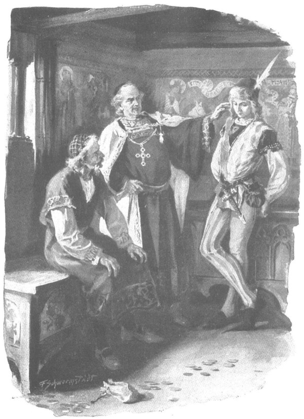

Vừa về đến nhà, Jagienka vội phái ngay một tên gia nhân quay lại Krześnia dò hỏi xem trong tửu quán có vụ đánh nhau nào, có ai thách đấu với ai chăng. Nhưng được nhận một đồng skojec bạc để chi tiêu, gã này quá mải mê chén chú chén anh với đám đầy tớ của linh mục, quên mất chuyện trở về báo cho cô chủ. Người gia nhân thứ hai được phái tới trang Bogdaniec báo cho ông Maćko biết tin cha tu viện trưởng sẽ tới thăm, hoàn thành nhiệm vụ trở về cho hay là đã gặp Zbyszko đang chơi mạt chược với vị trang chủ.
Tin ấy khiến Jagienka yên lòng phần nào, bởi vốn hiểu rõ kinh nghiệm và tài cung kiếm của Zbyszko, cô không lo chàng bị thách đấu nhưng lại sợ chàng gặp phải chuyện chẳng lành nghiêm trọng hơn trong tửu quán. Cô cũng muốn được đi cùng cha tu viện trưởng tới Bogdaniec, nhưng cha không cho, bởi cha định sẽ bàn với ông Maćko chuyện chuộc lại đất đai và một việc nữa quan trọng hơn nhiều - việc mà ông không muốn Jagienka tham dự.
Ông lên đường vào buổi tối. Sau khi hay tin Zbyszko bình yên trở về nhà, cha rất khoái chí, ra lệnh cho các chủng sinh quấy tếu của mình ca hát ồn ào đến mức cả rừng như cũng phải rung chuyển, còn đám nông nô ở trang Bogdaniec thì đều phải thò đầu khỏi lều nhìn xem có phải quân địch đã kéo tới chăng? Nhưng người hành hương cầm chiếc gậy cong dẫn đầu đoàn đã báo cho họ yên lòng rằng đó là một bậc tu hành đạo cao đức trọng đang du ngoạn đấy thôi. Họ bèn cúi gập người xuống chào cha, một số người thậm chí còn cung kính làm dấu thánh giá trước ngực. Thấy mình được mọi người trọng thị, cha càng vui vẻ và tự hào bước tiếp, lòng tràn đầy sung sướng, rất đỗi hài lòng với thế gian và bao la tình nhân ái đối với mọi người.
Nghe tiếng hò hát, ông Maćko và Zbyszko ra tận cổng nghênh đón cha. Một số người trong đám chủng sinh trước kia đã có lần đi với cha tu viện trưởng tới Bogdaniec, nhưng cũng có kẻ mới, chưa được thấy trang ấp này bao giờ. Lòng những kẻ ấy chợt nguội hẳn đi khi nom thấy một tòa gia trạch bần hàn, không sao sánh nổi với dinh thự khang trang ở Zgorzelice. Tuy nhiên, họ cũng phần nào được khích lệ trước làn khói đang tỏa ra từ mái rạ, và lòng họ phấn chấn hẳn lên khi vừa bước vào nhà đã ngửi ngay thấy hương nghệ tây thơm ngào ngạt cùng mùi thơm của các món thịt thà đủ loại, lại trông thấy hai dãy bàn bày đầy các thứ đĩa thiếc, tuy vẫn còn trống cả nhưng to đến nỗi không ai không hứng khởi. Trên chiếc bàn nhỏ hơn bày một chiếc dĩa bằng bạc ròng sáng choang cùng một bình rượu được chạm trổ tuyệt xảo dành riêng cho cha tu viện trưởng, cả hai thứ đều là chiến lợi phẩm đoạt được từ tay các hiệp sĩ xứ Fryzja cùng bao đồ vật quý giá khác.
Ông Maćko và Zbyszko mời khách khứa ngồi ngay vào bàn, nhưng vì vừa ăn khá no trước khi rời trang Zgorzelice, hơn nữa lại đang nóng lòng giải quyết công chuyện, nên cha tu viện trưởng từ chối. Ngay từ lúc vừa đặt chân tới đây, cha đã chăm chú và có phần hơi lo ngại ngắm Zbyszko, mong tìm được những vết tích của cuộc ẩu đả trên người chàng, nhưng khi bắt gặp nét mặt hoàn toàn điềm tĩnh của chàng trai, ông đâm sốt ruột, và rốt cuộc không sao kìm nổi sự tò mò của mình.
- Ta vào buồng trước đã, phải bàn ngay chuyện chuộc đất - Ông bảo. - Các ngươi chớ có phản đối, nếu không ta giận đấy.
Nói đoạn, ông ngoảnh lại phía các chủng sinh, quát lớn:
- Còn chúng mày, ngồi im đấy, cấm lại gần cửa nghe trộm, nghe chưa.
Rồi ông mở cửa buồng, khó nhọc lách người qua, theo sau là ông Maćko và Zbyszko. Sau khi mọi người đã an vị trên những chiếc rương, cha tu viện trưởng liền hưởng về chàng hiệp sĩ trẻ tuổi.
- Anh có trở lại Krześnia chứ? - Ông nói.
- Dạ, thưa cha, có ạ.
- Thế sao?
- Con hiến tiền lễ misa cầu sức khỏe cho thúc phụ con ạ.
Cha tu viện trưởng loay hoay ngồi không yên trên mặt rương.
“Ha”, ông nghĩ bụng, “nó không giáp mặt thằng Cztan và thằng Wilk rồi! Có thể chúng không còn ở đó, cũng có thể nó không cố tìm bọn chúng. Ta lầm rồi!”
Cha cáu vì đã lầm, vì những tính toán của cha không đúng, và mặt cha đỏ dần, hơi thở bắt đầu gấp gáp.
- Thôi, hẵng nói chuyện chuộc đất đã! - Lát sau cha bảo. - Các ngươi có tiền chuộc không?… Nếu không có, đất vẫn là của ta!…
Đã biết sẽ đối phó với cha thế nào, nghe đến đó ông Maćko liền lặng lẽ nhổm lên, mở chiếc rương đang ngồi, lôi ra một túi tiền đựng đầy những đồng skojec bạc đã chuẩn bị sẵn, rồi thưa:
- Thưa cha, chúng con là những kẻ nghèo khó, nhưng chúng con cũng có đủ tiền cần thiết để trang trải hầu cha theo đúng bản giao kèo mà con đã ký với dấu thánh giá thiêng liêng. Nếu cha cần nhận thêm một khoản tiền nào nữa về những gì cha đã thu xếp thay chúng con tại ấp này, chúng con cũng không dám phàn nàn, sẽ xin trả đúng như lời cha phán truyền, và xin được ôm chân cha, cha chủ của chúng con.
Nói đoạn, ông cúi xuống ôm đầu gối cha, tiếp theo ông, Zbyszko cũng làm thế. Những tưởng sẽ có những lời cò kè mặc cả, cha tu viện trưởng hoàn toàn bị bất ngờ trước cung cách ấy, nhưng cha không vui, bởi nếu có mặc cả cha mới có thể đặt thêm điều kiện này khác, ấy vậy mà cơ hội đấy lại không còn.
Vì vậy, quẳng trả tờ giao kèo, tức khế ước cược nợ mà ông Maćko đã ký bằng dấu thánh giá, cha bảo:
- Sao các người lại nói đến chuyện trả thêm?
- Dạ, bởi chúng con đâu dám lấy không của cha! - Ông Maćko láu lỉnh trả lời, hiểu rằng trong trường hợp này càng làm trái ý cha nhiều bao nhiêu thì càng có lợi bấy nhiêu.
Trong chớp mắt, cha tu viện trưởng đùng đùng nổi giận.
- Thấy mặt chúng nó chưa? Chúng nó không thèm lấy không của người bà con họ hàng kia đấy! Miếng bánh của người ăn vào đắng miệng mà! Ta không thèm lấy không, cũng chẳng dại trả không, nhưng nếu ta thích quăng cho rách toạc túi tiền này thì ta sẽ quăng ngay lập tức cho bây coi!
- Dạ, cúi xin cha chớ làm điều ấy! - Ông Maćko kêu lên.
- Chớ làm à? Này, tiền chuộc của các ngươi đây! Ta cứ cho, đó là ân huệ của ta! Chứ nếu ta muốn ta cứ quẳng quách ra ngoài đường, các ngươi cũng chẳng hòng cản ta được! Chớ làm hả? Này thì chớ làm này!
Nói đoạn, ông giật phăng nút buộc, quật mạnh túi tiền xuống sàn, mạnh đến nỗi những đồng tiền bạc tràn ra chỗ da bị bục.
- Chúa sẽ trả công! Chúa sẽ trả công cho cha! Cha chủ của chúng con! - Ông Maćko vội thốt lên rối rít, vì ông chỉ chờ đợi giây phút này. - Giá như đây là của kẻ khác, chúng con chẳng dám lấy đâu, nhưng cha đã là chỗ họ hàng thân thuộc lại là cha tinh thần của chúng con, cha đã cho thì chúng con xin nhận…
Cha tu viện trưởng trợn mắt dữ tợn nhìn ông Maćko và Zbyszko hồi lâu, rồi cha bảo:
- Ta biết, dẫu đang tức nhưng ta vẫn biết rõ điều ta đang làm. Các ngươi cứ việc giữ lấy những gì các ngươi vừa được nhận, bởi báo trước cho các ngươi hay là các ngươi sẽ chẳng được nhận thêm một xu nào nữa đâu!
- Chúng con cũng chẳng dám mong điều ấy, thưa cha.
- Các ngươi nên biết rằng nếu có để lại thứ gì, thì thứ đó ta sẽ để lại cho một mình Jagienka thôi.
- Cả đất đai nữa ư, thưa cha? - Ông Maćko vờ ngây thơ hỏi.
- Cả đất đai nữa! - Cha tu viện trưởng gầm lên.
Nghe thấy thế, mặt ông Maćko dài thượt ra, nhưng ông cố định thần và nói:
- Ấy, sao cha đã vội nghĩ đến cái chết làm gì vậy, thưa cha! Cầu Chúa ban cho người trăm năm sống hoặc lâu hơn nữa, và trước đó Chúa sẽ ban cho người chức giám mục quang vinh.
- Chứ sao!… Ta kém gì kẻ khác! - Cha tu viện trưởng nói.
- Sao lại kém, cha hơn nhiều chứ ạ!
Những lời khen khiến lồng cha tu viện trưởng mềm bớt, vả lại, những cơn giận của cha vẫn thường ngắn ngủi.
- Này! - Cha bảo. - Các ngươi là họ hàng thân tộc, còn Jagienka chỉ là con đỡ đầu, nhưng từ bao nhiêu năm nay ta đã thương yêu nó và cả lão Zych nữa. Trên đời này, không có ai tốt bụng hơn lão Zych, cũng không có cô gái nào tốt hơn Jagienka. Thách kẻ nào dám nói gì họ ta xem nào?
Cha đưa mắt thách thức nhìn hai người, nhưng ông Maćko không những không phản đối mà còn vội vàng khẳng định rằng khắp vương quốc này, không tìm đâu ra láng giềng tốt hơn thế nữa.
- Còn về Jagienka, - ông nói, - thì có con gái đẻ, con cũng không thể yêu thương hơn. Chính nhờ Jagienka mà con khỏe lại, đến chết con cũng không quên chuyện đó.
- Chú cháu các ngươi sẽ bị nguyền rủa nếu quên điều đó, - cha tu viện trưởng bảo, - mà chính ta sẽ là người đầu tiên nguyền rủa các ngươi. Ta không mong điều dữ cho các ngươi, bởi các ngươi đều là ruột thịt của ta. Cũng vì thế, ta đã nghĩ ra một cách để những gì ta để lại vừa là của Jagienka mà cũng vừa là của các ngươi - các ngươi hiểu chứ?
- Xin Chúa ban cho điều đó thành sự thực! - Ông Maćko thốt lên. - Lạy Chúa Giêsu lòng lành! Con nguyện sẽ đi bộ, hành hương về tận mộ hoàng hậu ở Kraków, sẽ leo lên núi Trọc để cúi chào thanh gỗ lấy từ chính thánh giá thiêng liêng.
Vẻ chân thành trong câu nói của ông Maćko khiến cha tu viện trưởng hài lòng, mỉm cười bảo:
- Con gái ta có quyền chọn lựa, bởi nó vừa xinh đẹp, vừa có khá của hồi môn, lại là con nhà đại gia thục hạnh! Mấy cái thằng Cztan và Wilk chẳng là gì đối với nó? Con trai thống đốc cũng chẳng sang gì hơn nó. Nhưng nếu ta làm mối cho nó với ai đó mà không cần ướm trước ý nó, thì nó sẽ sẵn sàng cưới ngay kẻ đó, bởi nó yêu ta lắm và biết rõ ta chẳng bao giờ khuyên điều gì không hay.
- Kẻ nào được cha làm mối cho quả là có phúc. - Ông Maćko thốt lên.
Cha tu viện trưởng quay sang Zbyszko:
- Còn anh, anh nghĩ sao?
- Dạ, con cũng nghĩ như thúc phụ con…
Khuôn mặt phúc hậu của cha tu viện trưởng càng thêm rạng ngời. Ông đập tay đánh bộp một tiếng vào đùi Zbyszko rồi hỏi:
- Tại sao lúc ở nhà thờ, anh không để cho hai gã Wilk và Cztan đến gần Jagienka?… Hả?
- Để chúng khỏi nghĩ rằng con sợ gì chúng, và để cả cha cũng đừng nghĩ thế.
- Anh còn đưa cả nước thánh cho con bé nữa.
- Dạ vâng, con có đưa.
Cha tu viện trưởng lại vỗ vào đùi chàng lần nữa.
- Thế thì… thế thì anh lấy nó đi!
- Lấy đi! - Ông Maćko kêu lên như một tiếng vọng.

Cha tu viện trưởng khuyến khích Zbyszko lấy Jagienka
Nghe thấy thế, Zbyszko khoan thai đưa tay lên gom tóc vào mao mạng rồi mới trấn tĩnh nói:
- Làm sao con có thể lấy cô ấy được, một khi con đã thề nguyền cùng nàng Danusia con ngài Jurand trước bàn thờ Chúa ở Tyniec?
- Anh thề mấy ngù lông công thì cứ đi mà kiếm, còn việc cưới Jagienka thì có làm sao?
- Thưa không! - Zbyszko đáp. - Bởi khi nàng dùng chàng mạng trùm lên đầu con, con đã nguyền sẽ cưới nàng làm vợ.
Máu dồn lên mặt cha tu viện trưởng, hai tai ông dần dần tím lại, mắt trợn lên. Cha tiến lại gần Zbyszko và thốt lên bằng giọng sục sôi cơn giận đang cố nén:
- Những lời thề thốt của anh chỉ là chút mảy, còn ta đây là ngọn cuồng phong! Hiểu chưa? Phù!…
Cha thổi một hơi thật mạnh vào đầu chàng khiến chiếc mao mạng bay vút đi, tóc chàng xõa rũ rượi xuống vai và lưng. Zbyszko nhíu mày, nhìn thẳng vào mắt cha tu viện trưởng, thốt lên:
- Danh dự của con nằm trong những lời thề nguyện, mà chính con là người lính canh giữ danh dự ấy!
Nghe chàng nói, vốn không bao giờ chịu nổi sự trái ý, cha tu viện trưởng tức đến nghẹn thở, suốt hồi lâu chẳng thốt ra lời nào. Một bầu không khí im lặng đáng sợ bao trùm, mãi sau mới bị tiếng ông Maćko phá tan:
- Zbyszko! - Ông kêu lên. - Hãy tỉnh trí lại! Mày làm sao thế?
Nhưng cha tu viện trưởng đã vung tay chỉ thẳng vào mặt chàng trai và quát lớn:
- Nó bị làm sao? Ta biết rằng nó bị làm sao rồi! Linh hồn nó không phải linh hồn hiệp sĩ, cũng chẳng phải quý tộc, mà chỉ là loài thỏ đế! Nó khiếp sợ hai thằng Cztan và Wilk đó thôi!
Hoàn toàn không mất điềm tĩnh, Zbyszko chỉ khinh thị nhún vai, nói:
- Ồ! Con đã đập vỡ đầu hai thằng đó ở Krześnia rồi!
- Lạy Chúa! - Ông Maćko thốt lên.
Cha tu viện trưởng giương mắt trừng trừng nhìn Zbyszko hồi lâu. Trong lòng ông, cơn thịnh nộ vật lộn với niềm kinh ngạc. Trí óc vốn tinh nhanh nhắc ông nhớ rằng ông có thể rút từ chuyện chàng trai đánh nhau với hai gã Cztan và Wilk kia những điều có lợi cho ý định của mình.
Vì vậy, lòng nguôi nguôi đôi chút, ông quát hỏi Zbyszko:
- Thế sao mày không chịu mở mồm nói?
- Bởi con xấu hổ, thưa cha. Con nghĩ là chúng sẽ thách đấu đàng hoàng theo cung cách xứng với những hiệp sĩ, dù là đấu trên ngựa hay trên bộ cũng được, nhưng bọn chúng chỉ là phường kẻ cướp chứ đâu phải hiệp sĩ. Thằng Wilk giật ngay một tấm mặt bàn, Cztan giật tấm nữa, lao vào con! Biết làm thế nào được? Con cũng phải vớ lấy chiếc ghế dài, và thế là… Cha và chú biết đấy…
- Chúng nó còn sống chứ? - Ông Maćko hỏi.
- Còn sống, nhưng bị ngất. Lúc con ở đấy chúng vẫn còn thở.
Cha tu viện trưởng lắng nghe, bất giác đưa tay gạt mồ hôi trán, rồi đột ngột nhổm khỏi chiếc rương đang ngồi như thể để dễ bề tập trung suy nghĩ, ông kêu lên:
- Khoan!… Ta sẽ bảo anh điều này!
- Thưa, cha dạy gì ạ? - Zbyszko hỏi.
- Anh có biết rằng một khi anh đã đánh nhau vì Jagienka, một khi đã nện vỡ đầu người ta vì con bé, thì anh đã là hiệp sĩ của chính nó chứ không phải của ai khác nữa. Nhất định anh phải lấy nó thôi.
Nói đoạn, ông chống nạnh, nhìn Zbyszko vẻ đắc thắng. Chàng mỉm cười nói:
- Hey! Con biết rõ vì sao cha muốn con đánh nhau với bọn chúng, nhưng cha nhắm trượt đích mất rồi.
- Sao lại trượt!… Nói…
- Bởi vì con đã bắt chúng phải thừa nhận rằng thiếu nữ kiều diễm và đức hạnh nhất trên đời là nàng Danusia con gái hiệp sĩ Jurand, mà chúng lại bảo vệ thanh danh cho Jagienka nên mới có trận ẩu đả đó.
Nghe chàng nói, cha tu viện trưởng đứng sững như bị hóa đá, chỉ qua làn mi chớp chớp mới nhận ra ông đang còn sống. Đột nhiên, ông quay phắt lại, đạp tung cửa buồng. Lao ra phòng ngoài, ông giật phắt chiếc gậy cong queo từ tay người hành hương, quật túi bụi vào đám chủng sinh, miệng gầm gừ như một con bò tót trúng thương:
- Lên ngựa ngay, lũ hề! Lên ngựa! Đồ chó chết! Ta không bao giờ thèm đặt chân đến cái nhà này nữa! Lên ngựa! Lên ngựa ngay! Hỡi những ai còn tin nơi Chúa! Lên ngựa!…
Rồi đạp tung cửa ra vào, ông lao như bay ra sân, theo sau là các chủng sinh lang bạt đang thảng thốt. Phóng như gió đến chỗ lều buộc ngựa, họ vội vã đóng yên cương nhanh như chớp. Uổng công ông Maćko chạy theo sau cha tu viện trưởng, uổng công ông van nài cầu xin khẩn thiết, uổng công ông thề thốt là mình không có lỗi! Chẳng ích gì! Cha tu viện trưởng chửi thề, nguyền rủa cả tòa gia trạch này, cả người ngợm, cả đồng đất nơi đây. Và khi người ta dắt ngựa tới, cha nhảy phắt ngay lên yên, không dùng đến bàn đạp, thúc ngựa phi nước đại ngay, hai ống tay áo rộng bay phần phật trong gió, hệt như đôi cánh chim màu đỏ khổng lồ. Các chủng sinh hoảng hốt lao vút theo ông, như đàn chim vội vã bay theo con đầu đàn.
Ông lão Maćko đứng lặng hồi lâu nhìn theo, cho đến khi thấy họ khuất bóng sau rừng, mới chậm chạp quay vào nhà. Ông vừa nói với Zbyszko vừa gục gặc mái đầu buồn bã:
- Mày làm chuyện gì hay gớm thế, hở con!…
- Sẽ chẳng có chuyện ấy nếu cháu ra đi từ trước, cháu chưa đi là vì chú đó thôi…
- Sao lại vì tao?
- Cháu không thể để chú đau ốm mà đi.
- Bây giờ sẽ ra sao đây?
- Giờ cháu phải đi.
- Đi đâu?
- Đến Mazury, đến với Danusia… Và đi kiếm những chỏm lông công trên đầu bọn Đức.
Ông Zbyszko im lặng hồi lâu rồi bảo:
- Khế ước cha đã trả đây rồi, nhưng việc nhượng đất còn ghi cả trong tùng thư tòa án. Chắc cha tu viện trưởng sẽ chẳng bớt cho chúng ta một đồng nào.
- Không bớt thì thôi. Chú vẫn còn tiền đấy, cháu chẳng cần mang theo làm gì. Ở đâu người ta chẳng tiếp đãi cháu, chẳng cho ngựa ăn, chỉ cần đội khôi giáp lên đầu và mang thanh gươm trong tay thì chẳng phải lo lắng gì cả.
Ngẫm nghĩ về những chuyện vừa xảy ra, ông Maćko thấy chẳng chuyện nào đúng ý ông cả. Ông những muốn cưới được Jagienka cho Zbyszko, nhưng ông hiểu rằng món bột này không thể gột nên hồ nữa rồi. Trước cơn giận của cha tu viện trưởng, trước ông Zych và Jagienka, trước tai vạ do cuộc ẩu đả với Wilk và Cztan, tốt nhất nên để cho Zbyszko ra đi, hơn ở lại đây để trở thành nguyên do cho những bất hòa và xung đột mới.
- Hà! - Mãi sau ông mới thốt lên. - Đằng nào thì mày cũng phải tìm săn mấy cái đầu giặc Đức, nếu chẳng còn cách nào khác thì mày cứ đi đi. Cầu xin mọi sự diễn ra theo ý Chúa Giêsu. Còn tao, có lẽ tao phải sang ngay bên Zgorzelice, biết đâu ông lão Zych chẳng có cách làm dịu lòng cha tu viện trưởng… Tao thấy thương cho lão Zych quá chừng…
Nói đến đây, ông nhìn thẳng vào mắt Zbyszko, hỏi đột ngột:
- Còn mày, mày không thương Jagienka à?
- Cầu Chúa ban cho cô ấy sức khỏe và những gì tốt đẹp nhất trên đời! - Zbyszko đáp.